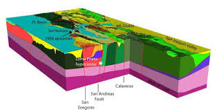

Geo Data Analyst
GeoDataAnalyst is an online business intend to be the industry leader in geologic software development, innovative data analyses and database support, integrating the field of geology, engineering and computer science. The website will be available at http://www.geodatanalyst.com registered to Mr. Ankan Basu.
GeoDataAnalyst will promote open source software development while serving customer with specific data needs. It will provide training to geologists, geochemists and hydrogeologists to use advanced software and programming languages targeted towards environmental science and earth science field.
|  |
Products and services
The primary product of the business will be services in geologic programming and computation including:
- Custom software design: Company will develop graphical user interface (GUI) as per client’s request to solve unique data problems in geology. Programs will be developed using object oriented programming languages (OOP) such as JAVA, Python, C++.
- Custom database design: Company will also provide support in designing complex data structure and developing custom queries and reports. Database design will be done using open source software such as MySQL or using Microsoft Access.
- Big Data Analyses: Company will provide support for analyzing big data, often millions of gigabytes using complex HADOOP programming interface. It will also include statistical programming language R.
- Data Visualization: Data visualization is another service that we will provide using various cutting edge technologies such as Slidify, JAVA Script, and HTML5.
- IT and GIS support: Geographic Information System is used worldwide to solve various kinds of problems. We will provide custom made GIS solutions for practical problems for clients.
- Custom online and onsite training: Initially the business will also provide online training sessions targeted to geologists, hydrogeologists and environmental scientists with limited programming background. Specifically, initial programming and modeling courses will be offered to learn MODFLOW, GIS, 3-D modeling and statistical analysis. In future, onsite training will also be provided in a classroom setting.
Image Credit
Similar Websites
GeoDataAnalyst
407 Ridgeway Drive
Bluefield, VA, 24605
407 Ridgeway Drive
Bluefield, VA, 24605